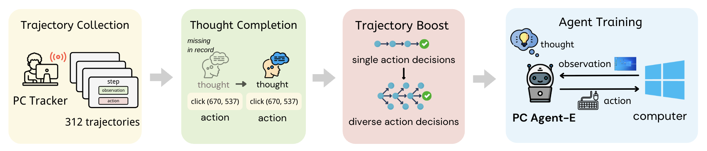

PC Agent-E completing an example in WindowsAgentArena-V2
PC Agent-E completing an example in OSWorld
Scaling up high-quality trajectory data has long been a critical bottleneck for developing human-like computer use agents. We introduce PC Agent-E, an efficient agent training framework that significantly reduces reliance on large-scale human demonstrations. Starting with just 312 human-annotated computer use trajectories, we further improved data quality by synthesizing diverse action decisions with Claude 3.7 Sonnet. Trained on these enriched trajectories, our PC Agent-E model achieved a remarkable 141% relative improvement, surpassing the strong Claude 3.7 Sonnet with extended thinking on WindowsAgentArena-V2, an improved benchmark we also released. Furthermore, PC Agent-E demonstrates strong generalizability to different operating systems on OSWorld. Our findings suggest that strong computer use capabilities can be stimulated from a small amount of high-quality trajectory data.
If you have any questions regarding this project, feel free to directly submit a github issue.
@article{he2025efficientagenttraining,
title={Efficient Agent Training for Computer Use},
author={Yanheng He and Jiahe Jin and Pengfei Liu},
year={2025},
journal={arXiv preprint arXiv:2505.13909},
url={https://arxiv.org/abs/2505.13909}
}